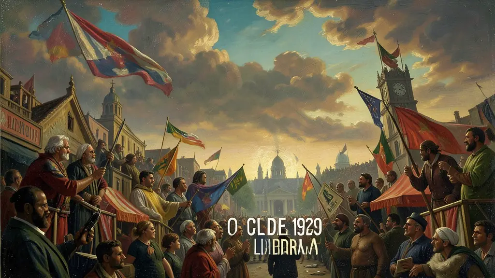
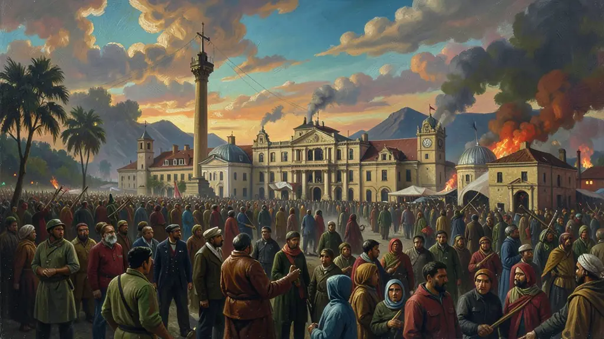

Capítulo 01
1. O American Way of Life e a Ilusão do Crédito
Nos anos 20, todos acreditavam que o crescimento seria infinito. O crédito era fácil e as pessoas compravam ações na bolsa de valores até com dinheiro emprestado. A publicidade convencia o cidadão médio de que ele precisava de um carro novo todo ano para ser feliz. Essa fachada de sucesso escondia a fragilidade de um sistema que produzia muito mais do que o povo conseguia comprar.

Capítulo 02
2. O Crack da Bolsa: O Dia em que o Céu Caiu
Quando os investidores perceberam que os lucros das empresas estavam caindo, todos tentaram vender suas ações ao mesmo tempo. Como não havia compradores, os preços despencaram. Milhares de pessoas que eram ricas no café da manhã estavam na fila da sopa na hora do jantar. O suicídio de empresários e o desespero nas ruas tornaram-se cenas comuns nas cidades americanas.
Capítulo 03
3. A Grande Depressão Global
Como os EUA pararam de emprestar dinheiro e de importar produtos, a crise espalhou-se como um vírus. Na Alemanha, a inflação e a fome atingiram níveis absurdos, o que destruiu a fé na democracia e permitiu que Hitler usasse o discurso de 'salvação nacional' para ganhar popularidade. A crise econômica de 1929 foi a 'mãe' política da Segunda Guerra Mundial.

Capítulo 04
4. O New Deal: O Estado como Locomotiva
Roosevelt entendeu que sem o Estado investindo, a economia não voltaria a girar. Ele criou a TVA (Tennessee Valley Authority) para levar energia ao campo e construir barragens, contratando milhões de desempregados. Ele também instituiu o salário mínimo e a previdência social. O governo passou a cobrar mais impostos dos ricos para financiar o sustento dos pobres, salvando a paz social nos EUA.
Capítulo 05
5. Consequências no Brasil: O Fim do Café
O Brasil era o maior produtor de café do mundo e dependia 70% das compras americanas. Com a crise, as sacas de café apodreceram nos portos. O governo brasileiro chegou a queimar montanhas de café para tentar manter o preço, mas foi em vão. A burguesia cafeeira ruiu, e Getúlio Vargas aproveitou o vácuo de poder para tomar o governo em 1930, encerrando a hegemonia de SP e MG.
A Crise de 1929, ou a Grande Depressão, representou o colapso do liberalismo econômico clássico que havia dominado o século XIX. Iniciada com a quebra da Bolsa de Valores de Nova York em decorrência da superprodução e do subconsumo, a crise rapidamente se espalhou pelo mundo globalizado, revelando a fragilidade das economias dependentes do mercado financeiro americano. Países exportadores de matérias-primas, como o Brasil (café), foram duramente atingidos, vendo suas economias colapsarem em poucos meses.
A resposta à crise veio através do 'New Deal' de Franklin D. Roosevelt e das teorias de John Maynard Keynes, que propunham um Estado mais interventor na economia para garantir o pleno emprego e o consumo. O 'Welfare State' surgiu como uma alternativa para salvar o próprio capitalismo de suas crises cíclicas. Na Europa, o desespero econômico alimentou a ascensão de regimes nazi-fascistas, que prometiam ordem e emprego através do nacionalismo militarista e autoritário.
No Brasil, a Crise de 1929 foi o golpe de misericórdia na República Velha. A queda brusca no preço do café enfraqueceu as oligarquias paulistas, abrindo caminho para a Revolução de 1930. Para o Enem, a compreensão de 1929 é fundamental para analisar a transição para o modelo de 'Substituição de Importações' e o nascimento de um Estado brasileiro mais forte e coordenador da economia, rompendo com o *laissez-faire* da elite agrária anterior.
Fonte: GALBRAITH, John Kenneth. A Crise de 1929. Rio de Janeiro: José Olympio, 2011.
Atividades interativas
Questões para fixar
A crise econômica de 1929 teve início nos Estados Unidos e espalhou-se pelo mundo. Qual foi a principal tese econômica adotada para solucionar a Grande Depressão através do New Deal?
O impacto da Crise de 1929 no Brasil foi determinante para uma mudança política profunda. Esse impacto manifestou-se através de: